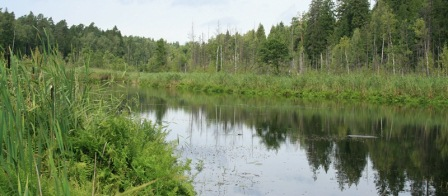
"Такая разная
чистая вода!"
Что такое чистая вода? В её поисках мы находим бесконечное разнообразие существ, которые зависят от неё. Одними из них являемся мы сами.
Идея проекта возникла не случайно. Так часто, говоря о чистой воде, мы представляем себе воду, которую пьём. Но далеко не всякая питьевая вода так чиста, как мы о ней думаем. И напротив, в природе мы встречаем реки, озёра и болота, вода которых сохраняет свою чистоту. Но многие вряд ли бы отважились попробовать её даже на вкус. Проект "Такая разная чистая вода!" нацелен на расширение понятия «чистая вода» в сознании детей, знакомстве с разнообразием естественных водных экосистем, необходимости их сохранения и важности их значения для жизни людей. Именно об этом 25 ноября говорили участники проекта и гости музея, среди которых были как дети, так и взрослые.
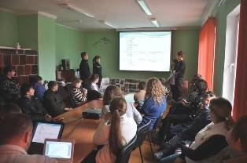
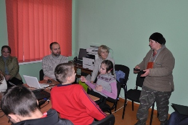
В прошлое воскресенье 25 ноября в посёлке Краснолесье в Виштынецком эколого-историческом музее состоялось заключительное мероприятие - семинар по проекту «Такая разная чистая вода!». В этот день в посёлок приехали дети из разных уголков Калининградской области, чтобы рассказать жителям посёлка о своих исследованиях, которые они проводили в ходе летних экспедиций в Славском и Нестеровском районах. Подобный семинар уже неделю назад 17 ноября состоялся в Славском районе на базе одного из партнёров проекта - Большаковской средней школы. Но чтобы поведать людям о своих исследованиях детям - участникам проекта пришлось немало потрудиться в летних экспедициях, которые состоялись в августе этого года.
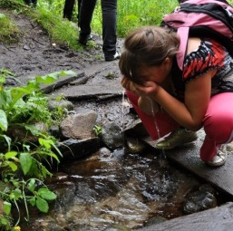
Проект «Такая разная чистая вода!» стал победителем конкурса социальных и культурных проектов OAO «Лукойл» и ООО «Лукойл-КМН» в 2012 году. Партнёрами Калининградского регионального общественного учреждения «Виштынецкий эколого-исторический музей» по проекту стали: МБОУ СОШ «Школа будушего» (пос. Б. Исаково), МБОУ Большаковская СОШ (Славский р-н), МАОУ Залесовская школа, КРОУ «Природное наследие», Калининградский союз «Антропос», Союз Anthropos e.V. - ради детей этого мира (Германия).
Нужно отметить, что участвовать в проекте были приглашены самые активные участники экологических программ более чем из 11 школ и экологических объединений Калининградской области. Среди них оказались и воспитанники экологического кружка, работающего на базе музея в посёлке Краснолесье Диана Юхневская и Дима Пивоваров. Несколько дней августа ребята вместе с учёными провели в походах и исследованиях в окрестностях посёлка Громово, в котором полевой базой стал «Дом на болоте», а также в окрестностях посёлка Краснолесье на базе Виштынецкого экомузея. Места проведения экспедиций были выбраны не случайно. Два ландшафтных района области Нижненеманская низменность на севере области и Виштынецкая возвышенность в её юго-восточной части (юг Нестеровского района) отличаются друг от друга и происхождением, и рельефом, и своими водными экосистемами. Именно они стали объектом пристального внимания юных исследователей. В ходе экспедиции дети познакомились с типами разнообразных водных экосистем, рек, озёр, низинных и верховых болот, родников. С помощью специальных методик участники изучали физические и химические свойства воды, оценивали степень её чистоты, мнение местных жителей о воде.
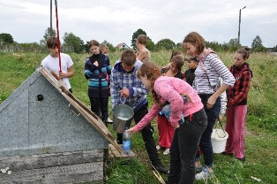
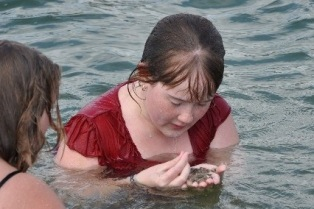
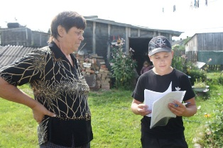
В заключение семинара участники проекта были отмечены свидетельствами и памятными футболками с названием проекта.
Также были вручены специальные дипломы партнёрам музея по проекту.
Также были вручены специальные дипломы партнёрам музея по проекту.
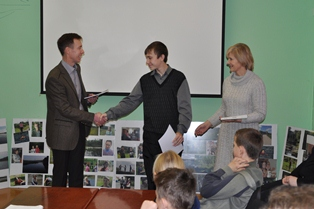
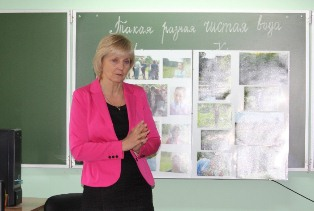
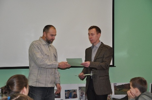
По результатам проекта подготовлена фотовыставка, которая будет работать в музее до конца января, а затем отправиться в путешествие по школам Калининградской области, дети которых приняли участие в проекте. Они на собственном опыте убедились в том, что чистая вода такая разная и такая драгоценная!
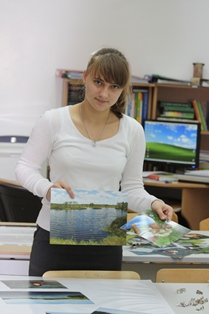
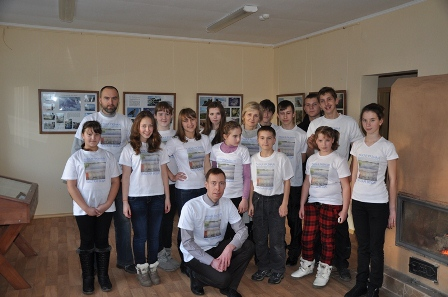
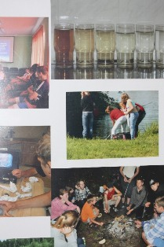
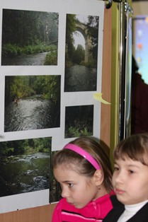

Фото: А. Соколов, Т. Талецкая
25 ноября 2012 г.